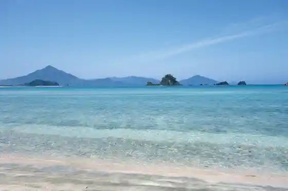
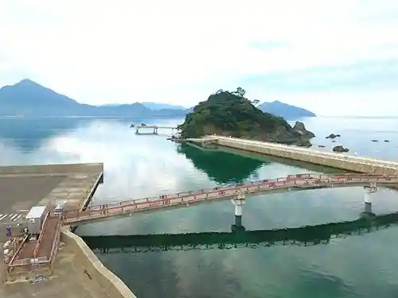
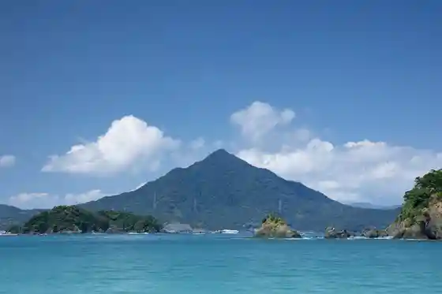
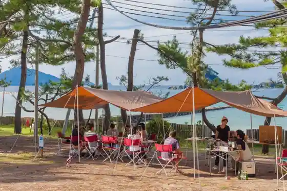

Wakasa Wada Beach
Takahamacho, Fukui · 0770-72-0338 · Official / source link

Shiroyama Park Meikyo Hora (Shiroyama Beach)
Takahamacho, Fukui · 0770-72-0338 · Official / source link
Wakasa Takahamacho Umizuri Ri Park
Takahamacho, Fukui · 0770-72-1234 · Official / source link

Aobayama
Takahamacho, Fukui · 0770-72-7705 · Official / source link

Wakasa Wada Campground
Takahamacho, Fukui · 0770-72-1068 · Official / source link

Torii Hama Beach Shirahama Beach
Takahamacho, Fukui · 0770-72-0338 · Official / source link
Uma Kyo Tera
Takahamacho, Fukui · 0770-72-1264 · Official / source link
Taisei Tera
Takahamacho, Fukui · 0770-72-3089 · Official / source link
Kenko Choju Village Aobayama Habarubirejji
Takahamacho, Fukui · 0770-50-9012 · Official / source link
UMIKARA
Takahamacho, Fukui · 0770-72-3528 · Official / source link
Rentasaikuru - Takahamacho - Wakasa Takahamacho Eki (Wakasa Takahamacho Tourism Association)
Takahamacho, Fukui · 0770-72-0338 · Official / source link
Nakayama Tera
Takahamacho, Fukui · 0770-72-0753 · Official / source link
Wakasa Takahama Eru Dorando
Takahamacho, Fukui · 0770-72-5890 · Official / source link
Kumano Shrine
Takahamacho, Fukui · Official / source link
Takahamacho Local History Museum
Takahamacho, Fukui · 0770-72-5270 · Official / source link
Hamanasu BBQ Park
Takahamacho, Fukui · 0770-72-4653 · Official / source link
Hiroseoto Campground
Takahamacho, Fukui · 0770-76-1858 · Official / source link
Oto Kaidai Dangai
Takahamacho, Fukui · 0770-72-7705 · Official / source link
Wakamiya Beach
Takahamacho, Fukui · 0770-72-0338 · Official / source link
Ebisu Hama Park Beach
Takahamacho, Fukui · 0770-72-0338 · Official / source link
Goshiki Yama Park
Takahamacho, Fukui · 0770-76-1641 · Official / source link
Hamanasu Park Beach
Takahamacho, Fukui · 0770-72-0338 · Official / source link
Sa Ki Osamu Shrine
Takahamacho, Fukui · 0770-72-0041 · Official / source link
Takumi no Art Museum
Takahamacho, Fukui · 0770-76-1641 · Official / source link
Hana Forest
Takahamacho, Fukui · 0770-76-1641 · Official / source link
Shingu Shrine
Takahamacho, Fukui · Official / source link
Shoraku Tera
Takahamacho, Fukui · 0770-76-1417 · Official / source link
Takahamacho Town Hall
Takahamacho, Fukui · 0770-72-1111 · Official / source link